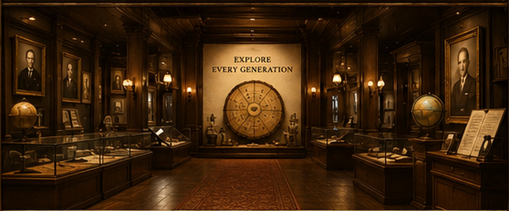
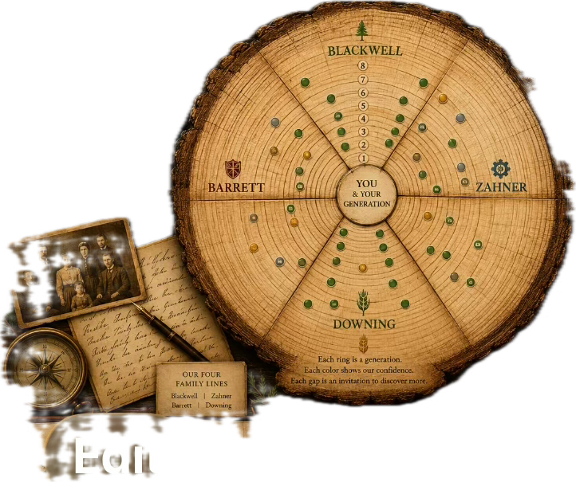

Welcome to the Museum
Every room preserves part of the story.
Every family leaves behind traces. Some are preserved in photographs. Others survive only in fading records, forgotten stories, or a single name written in an old Bible.
This museum exists to preserve those lives—not only the famous, but everyone who made the next generation possible.
Begin anywhere. Every room tells part of the story.
Museum Collection
Museum Directory
Migration Across Time
See where four family paths moved toward one another.
Routes follow the migration stops currently installed in the museum. Shared segments overlap instead of being separated for decoration.
0path crossings currently installed

Select a route or crossing.The museum will show shared places, shared segments, and whether the families were there during overlapping years.